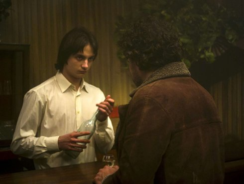

{kind=link}
Longa Noite
Endless Night

Eloy Enciso
Monday | 14 oct 8.30 pm | werkstattkino
A journey through three decades of Franco’s dictatorship: an ensemble film made up of the tales of those who went through a dark period after the war questioning the value of their individual choices. Driven by the disconcerting performance of amateur actors, with emblematic and suggestive faces, the film opens up to a cosmic dimension in which the voice of the resistance stands out against the mysterious landscape of Galicia. (Daniela Persico, Locarno Film Festival)
Eloy Enciso born 1975 in Meira, Galicia (Spain). Enciso studied documentary film at the Escuela Internacional de Cine y TV in Cuba. Enciso's work has also been shown at the Centre de Cultura Contemporània de Barcelona, the Museo Nacional Centro de Arte Reina Sofía, the Museum of Modern Art (MoMA) and the Museum of the Moving Image. In 2014, he received the Robert Gardner Fellowship from Harvard's Film Study Center and participated in the MoMA Modern Mondays program. He lives and works in Galicia.
|
| Films Pic-nic 2007 | Arraianos 2012 (8. UX) | Longa Noite 2019
|